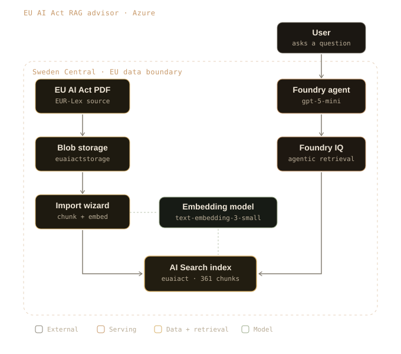

Project 01 · Azure · EU AI Act
EU AI Act compliance advisor
RAG on Azure
Reference build
2026
Reference build
2026

The approach
A retrieval-augmented assistant that answers questions on the EU AI Act grounded strictly in the official text, so every answer cites the specific articles and refuses when the source doesn't cover the question. Built on Microsoft Foundry: a Foundry agent (gpt-5-mini) grounded on a Foundry IQ knowledge base over an Azure AI Search vector index, with text-embedding-3-small for retrieval.
Designed and assembled from managed cloud services. The contribution is the architecture, the design decisions, and the governance, not custom model code.
Governance & residency
- Runs inside the EU data boundary in Sweden Central.
- Managed identity with least-privilege roles throughout.
- Web search deliberately disabled to keep data in the boundary.
- Grounded answers with article-level citations; refuses out-of-scope questions.